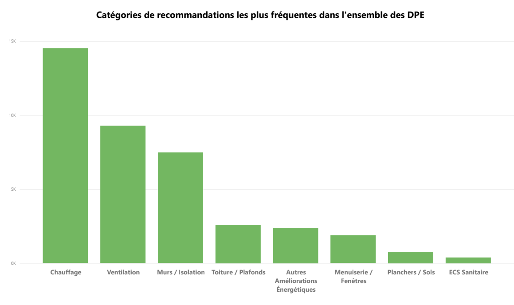
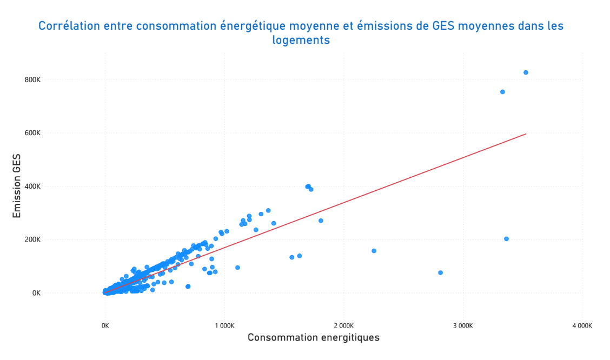
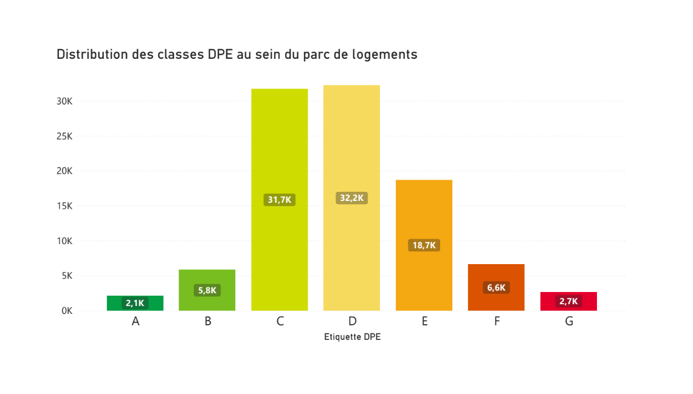

Consumption distribution
Shows the strong right-skew and why robust scaling / transforms were useful.

Transformer une base open-data complexe en un dataset fiable + analyses décisionnelles (qualité, préparation, insights & livrables).
Objectif : fiabiliser la donnée DPE (cohérence, manquants, outliers) et produire des analyses exploitables.
Good analytics starts with reliable data.
Une démarche en 3 étapes : audit qualité → préparation → analyses & livrables.
Quelques insights types + ce que le projet démontre en compétences data.
Tu peux remplacer ces phrases par tes chiffres exacts quand tu veux.
Three key charts to illustrate the dataset structure and the main insights.

Shows the strong right-skew and why robust scaling / transforms were useful.

Highlights differences between houses vs apartments and how insulation impacts results.

Distribution of DPE labels and what it implies for the renovation potential.
Je peux détailler la démarche, les tests et les choix techniques.